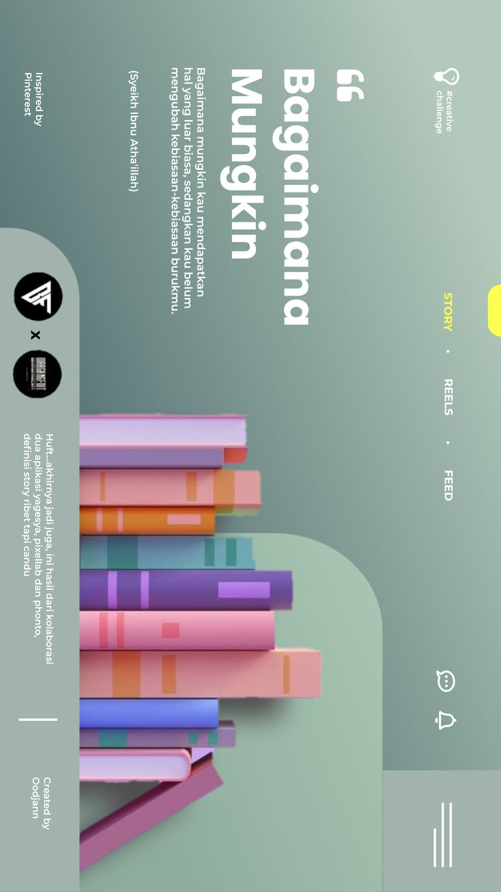

Une application web complète permettant la gestion intégrale d’une bibliothèque. Les administrateurs peuvent ajouter, modifier ou supprimer des livres, gérer les emprunts, les retours et les adhérents. L’interface est conçue pour être fluide, intuitive et responsive, offrant une expérience agréable tant pour les bibliothécaires que pour les utilisateurs.
Date
Mai 2024
Durée
2 mois
